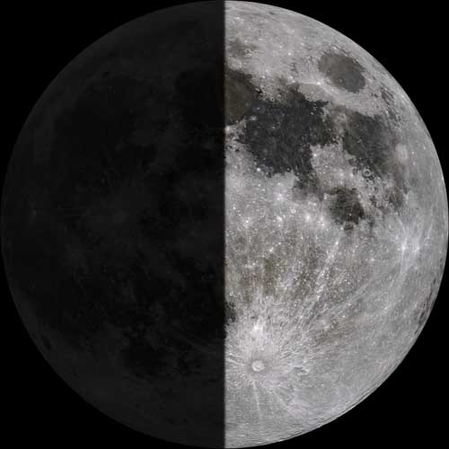

Love and birthday letter for the most beautiful woman to existt ♡
HII NINAA, KDKSJDJ itss your birthdayyy, happy birthdayy mi niñaaa, solo
quiero que sepas lo muy feliz que me hacesss cada vez que me escribes,
me hablas o escucho tu voz KDKDKDJS, lo feliz que me hace ver tu sonrisa
y escucharte reir, antes de que veas el regalo me parece importante que
leas esta carta, bien... quiero comenzar hablando sobre ti, hoy es un día especial
aunque sé que es un día que no te gusta por el montón de cosas que suelen suceder,
las veces que lo arruinaron o te ponían de mal humor en este día. Cielo, hoy es un
día importante porque se celebra tu nacimiento, 17 años desde que naciste, 17 años desde
que llegó al mundo una mujer preciosa, una mujer inteligente, una mujer respetuosa, una persona única,
siempre viendo desde una perspectiva diferente al resto, demostrando sus habilidades, el baile, las matemáticas,
cantar, los deportes, y rasgos únicos que te hacen resaltar dentro de un mundo lleno de diferentes personas. Un mundo
en el que cuando todos van de blanco, tú vas de negro, un universo donde las estrellas deciden brillar y ser de colores
azúles o blancos, tú eres una estrella que brilla de color amarillo o verde, porque el amarillo significa alegría, felicidad y
la energía, el verde significa naturaleza, esperanza, equilibrio, y es lo que veo dentro de ti, cosas muy positivas que hacen latir
mi corazón a 11000 revoluciones y detiene el tiempo con un solo cruce de nuestras miradas, en el que veo la profundidad de tus ojos,
el color café que más amo dentro de ellos, y mostrandome un mundo claro dentro del que podría vivir esta y otras vidas, un mundo lleno de
mares profundos de emociones dentro de los que quiero nadar jkdsjk, que ya lo hago, aunque el mar en ese mundo es diferente al mar de lo que llamamos
nuestra realidad, es un mar aunque profundo... calmado, dentro del que puedo flotar y saber que todo estará bien, un mundo donde los amaneceres y atardeceres
son obras de artes únicas cada vez que ocurren, donde las noches pasan de ser frías y solitarias, a ser noches hermosas bajo las luces de las estrellas, y el
resplandor de la luna, esa luna que mueve el mar de emociones y le da equilibro a un mundo lleno de arboles, lleno de bailes, lleno de posters de arcane, tocadiscos con vinilos de jennie,
de blackpink, de katseye, casas grandes y abiertas, perritos, playas y piscinas jksjkdjkd, un mundo en el que encuentras tu felicidad, comfort y donde puedes volver siempre que quieras
en el que disfrutas cuando deseas tu espacio a solas, escuchando baladas en spotify, un mundo precioso que haces brillar, porque es tuyo.
Ahora quiero mencionar un dato curioso sobre la fecha de tu nacimiento, más que un dato curioso es una foto curiosa jkdjksjkd

Casualmente este día, hoy 4 de marzo de 2026, coíncide con el mismo día que naciste, un miércoles 4 de marzo, me parece muy bonito y un detalle que quería incluir dentro de
esta letter, de cierta manera puedo relacionar la luna con lo ambivertida que puedes llegar a ser, los colores de la luna en la foto me recuerdan mucho al ying y el yang, que representan
un equilibrio, y mucho más definido si la luna tiene un 50% luz y 50% oscuridad, lo que considero va LITERALMENTE CONTIGO JKSDJKSJKD, así que si,
la luna se ve igual de linda que la persona que está leyendo esta carta ahora, más que una persona un ser que al igual que yo y otras personas, apreciamos y valoramos tenerla dentro de nuestra
vida, y agradecemos el momento en el que nos conocimos, hablando por mi...estoy agradecido de tenerte en mi día a día, como te digo la cambiaste, la sigues cambiando con tu brillo, carisma
sabiduría, madurez y sobretodo el cariño que me das, te deseo lo mejor en este año y los que vengan adelante, que puedas cumplir tus metas, que tus deseos se hagan realidad, y vivas tus días
como si fuesen los últimos.. jjsjsjs, this is a letter for you & just for you, i hope you enjoy your day even though is a day with complex schedule in your uni, I LOVE YOU NINA.